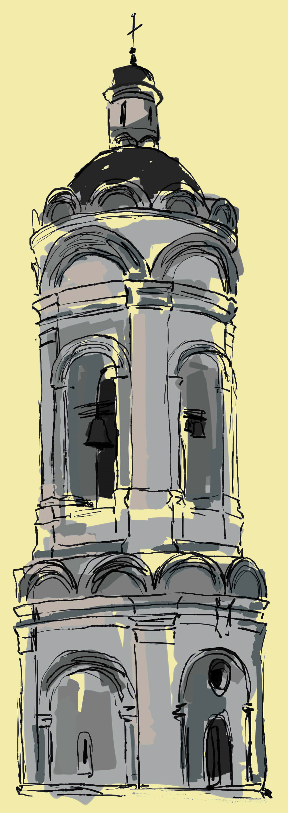

8. ВОДОВЗВОДНАЯ БАШНЯ — АРХИТЕКТУРНЫЙ ПАМЯТНИК НА ТЕРРИТОРИИ МУЗЕЯ-ЗАПОВЕДНИКА КОЛОМЕНСКОЕ. ПОСТРОЕНА В 70-Е ГОДЫ XVII ВЕКА ДЛЯ РАЗМЕЩЕНИЯ ВОДОПОДЪЁМНОГО МЕХАНИЗМА, СНАБЖАВШЕГО ВОДОЙ ГОСУДАРЕВ ДВОР.
БЫЛА ПОСТРОЕНА В 1670-Е ГОДЫ КАК ЦЕНТР СЛОЖНОЙ ГИДРОТЕХНИЧЕСКОЙ СИСТЕМЫ, СОЗДАННОЙ ДЛЯ ПОДАЧИ ВОДЫ В ГОСУДАРЕВ ДВОР. РАЗМЕЩАВШИЙСЯ В НЕЙ ВОДОПОДЪЁМНЫЙ МЕХАНИЗМ БЫЛ, ПРЕДПОЛОЖИТЕЛЬНО, ИЗГОТОВЛЕН МАСТЕРОМ ОРУЖЕЙНОЙ ПАЛАТЫ БОГДАНОМ ПУЧИНЫМ, ПРИСЛАННЫМ В 1675 ГОДУ В КОЛОМЕНСКОЕ «К СВОЕМУ ВОДОВЗВОДНОМУ ДЕЛУ». БАШНЯ РАСПОЛАГАЛАСЬ НА ДОРОГЕ МЕЖДУ КОЛОМЕНСКИМ И ДЬЯКОВЫМ, ПРОХОДЯЩЕЙ ЧЕРЕЗ ПЛОТИНУ В ОВРАГЕ, И КОМПОЗИЦИОННО ВЫПОЛНЯЛА РОЛЬ СВЯЗУЮЩЕГО ЗВЕНА МЕЖДУ СОСЕДНИМИ СЁЛАМИ. БАШНЯ МОГЛА ВХОДИТЬ В ЮЖНУЮ ЛИНИЮ ОГРАДЫ БЫВШЕЙ ЦАРСКОЙ РЕЗИДЕНЦИИ, КОТОРАЯ ОТДЕЛЯЛА ВОЗНЕСЕНСКИЙ САД ОТ ВОЗНЕСЕНСКОЙ ПЛОЩАДИ И ЯВЛЯЛАСЬ, ПО СЛОВАМ Ф. В. БЕРХГОЛЬЦА, «ПОСЛЕДНИМИ ЗАДНИМИ ВОРОТАМИ У ВХОДА В САД», ОТКУДА НАЧИНАЛАСЬ СТАРАЯ ДОРОГА В ДЬЯКОВО. ВОЗМОЖНО, БАШНЯ СМЕНИЛА ДЬЯКОВСКИЕ ВОРОТА, ВХОДИВШИЕ В ОГРАДУ ДРЕВНЕГО ГОСУДАРЕВА ДВОРА.
БАШНЯ ТАКЖЕ ИЗВЕСТНА ПОД НАЗВАНИЕМ «СОКОЛИНАЯ БАШНЯ», ТАК КАК СОГЛАСНО ЛЕГЕНДЕ, ПОЯВИВШЕЙСЯ В XIX ВЕКЕ, В НЕЙ СОДЕРЖАЛИСЬ ЛОВЧИЕ ПТИЦЫ ДЛЯ ЦАРСКОЙ СОКОЛИНОЙ ОХОТЫ.
КИРПИЧНОЕ ЗДАНИЕ ВЫСОТОЙ 40 М ВНЕШНЕ НАПОМИНАЕТ СВОЕОБРАЗНУЮ ПРОЕЗДНУЮ БАШНЮ. ПРОСТАЯ ФОРМА СТРОЕНИЯ СОГЛАСУЕТСЯ С ЕЁ НЕ ЛИШЁННЫМ ИЗЯЩЕСТВА ЧРЕЗВЫЧАЙНО СКРОМНЫМ ДЕКОРОМ. ВЕРТИКАЛЬНЫЕ ПРОПОРЦИИ БАШНИ ВПОЛНЕ СОГЛАСУЮТСЯ С АНАЛОГИЧНЫМИ СООТНОШЕНИЯМИ БЫВШЕЙ КОЛОКОЛЬНИ ВОЗНЕСЕНСКОГО ХРАМА, НЫНЕ КОЛОКОЛЬНИ ЦЕРКВИ ГЕОРГИЯ ПОБЕДОНОСЦА. КАК И В КОЛОКОЛЬНЕ, В КОМПОЗИЦИИ ВОДОВЗВОДНОЙ БАШНИ ИСПОЛЬЗУЮТСЯ ПРИЁМЫ ОРДЕРНОЙ СИСТЕМЫ. В НАСТОЯЩЕЕ ВРЕМЯ В ПОМЕЩЕНИИ БАШНИ РАСПОЛОЖЕНА ЭКСПОЗИЦИЯ ГОСУДАРСТВЕННОГО ХУДОЖЕСТВЕННОГО ИСТОРИКО-АРХИТЕКТУРНОГО И ПРИРОДНО-ЛАНДШАФТНОГО МУЗЕЯ-ЗАПОВЕДНИКА КОЛОМЕНСКОЕ ПОД НАЗВАНИЕМ «ГОСУДАРЕВО ВОДОВЗВОДНОЕ ДЕЛО. К ИСТОРИИ ВОДОСНАБЖЕНИЯ В XVII—XX ВЕКАХ».
 9. КОЛОКОЛЬНЯ СОВРЕМЕННОЙ ЦЕРКВИ ГЕОРГИЯ ПОБЕДОНОСЦА, ПО ВСЕЙ ВИДИМОСТИ, БЫЛА ПОСТРОЕНА В СЕРЕДИНЕ XVI ВЕКА И ВНАЧАЛЕ ОТНОСИЛАСЬ К СТОЯЩЕМУ РЯДОМ ХРАМУ ВОЗНЕСЕНИЯ. ВЕРОЯТНО, ОНА СМЕНИЛА ЗВОННИЦУ, ВОЗВЫШАВШУЮСЯ НАД ЮЖНЫМ КРЫЛЬЦОМ ВОЗНЕСЕНСКОЙ ЦЕРКВИ. ПОЛАГАЮТ, ЧТО В ЦЕРКОВЬ КОЛОКОЛЬНЯ ПРЕВРАТИЛАСЬ В ПОСЛЕДНЕЙ ЧЕТВЕРТИ XVII ВЕКА. ИМЕЕТСЯ ДОКУМЕНТАЛЬНОЕ УПОМИНАНИЕ О СУЩЕСТВОВАНИИ В КОЛОМЕНСКОМ «КАМЕННОЙ КОЛОКОЛЬНИЦЫ ЦЕРКВИ ВОЗНЕСЕНИЯ», НА КОТОРУЮ В 1640 ГОДУ БЫЛ ПОВЕШЕН БЛАГОВЕСТНЫЙ КОЛОКОЛ ВЕСОМ В 53 ПУДА, ОТЛИТЫЙ ПО ГОСУДАРЕВУ ПРИКАЗУ МАСТЕРОМ ДАНИИЛОМ МАТВЕЕВЫМ. В ОБЛИКЕ КОЛОКОЛЬНИ ВИДНО СИЛЬНОЕ ВОЗДЕЙСТВИЕ ОРДЕРНЫХ ФОРМ ИТАЛЬЯНСКОГО ВОЗРОЖДЕНИЯ. НЕСМОТРЯ НА АКТИВНОЕ ИСПОЛЬЗОВАНИЕ В КАЧЕСТВЕ ДЕКОРАТИВНОГО ЭЛЕМЕНТА ТАКОГО ЧИСТО РУССКОГО ЭЛЕМЕНТА КАК КОКОШНИК, В ФОРМАХ КОЛОКОЛЬНИ И ОБЩЕМ СТРОЕ ЕЁ ДЕКОРА ОЩУЩАЕТСЯ БЛИЗОСТЬ К АРХИТЕКТУРЕ ИТАЛЬЯНСКИХ КАМПАНИЛ XV — НАЧАЛА XVI ВЕКОВ. «ИТАЛЬЯНСКИЙ СЛЕД» ПРОСМАТРИВАЕТСЯ И В СПОСОБЕ ПОДВЕСКИ КОЛОКОЛОВ, ТИПИЧНОМ ДЛЯ ЗАПАДНЫХ ЗВОННИЦ, ГДЕ РАСКАЧИВАЛИ КОЛОКОЛА, А НЕ ЯЗЫКИ, КАК ЭТО БЫЛО ПРИНЯТО В РУССКОЙ ПРАКТИКЕ.
ДВУХЪЯРУСНАЯ КРУГЛАЯ В ПЛАНЕ БАШНЯ КОЛОКОЛЬНИ ПЕРЕКРЫТА КУПОЛЬНЫМ СВОДОМ, СТЯНУТЫМ СНАРУЖИ РЁБРАМИ ГУРТОВ, И УВЕНЧАНА МАЛЕНЬКОЙ ГЛАВКОЙ. В СТРОГОМ ДЕКОРЕ КОЛОКОЛЬНИ СОЧЕТАЮТСЯ БОЛЬШОЙ И МАЛЫЙ ОРДЕРЫ. ПОЛУЦИРКУЛЬНЫЕ КОКОШНИКИ, ЗАВЕРШАЮЩИЕ ЯРУСЫ БАШНИ, ПРЕКРАСНО ВПИСЫВАЮТСЯ В ОБЩУЮ РЕНЕССАНСНУЮ КОМПОЗИЦИЮ.
НИЖНИЙ ЯРУС БАШНИ ОБРАБОТАН ЛОЖНЫМИ АРКАМИ, ОКРУЖЁННЫМИ ШИРОКИМИ ПИЛЯСТРАМИ БОЛЬШОГО ОРДЕРА И ОКАНЧИВАЕТСЯ АНТАБЛЕМЕНТОМ. ПОЯС КОКОШНИКОВ ОТДЕЛЯЕТ НИЖНИЙ ЯРУС ОТ ВЫСОКОГО ЯРУСА ЗВОНА, ГДЕ ЛОЖНЫМ АРКАМ ВТОРЯТ НАСТОЯЩИЕ АРОЧНЫЕ ПРОЁМЫ. ВЕРХНИЙ ЯРУС ЗАКАНЧИВАЕТСЯ ДВУМЯ ПОЯСАМИ БОЛЬШИХ И МАЛЫХ КОКОШНИКОВ, ОКРУЖАЮЩИМИ КУПОЛ КОЛОКОЛЬНИ. ПЕРВОНАЧАЛЬНЫЙ ВХОД В КОЛОКОЛЬНЮ, РАСПОЛОЖЕННЫЙ С СЕВЕРО-ЗАПАДНОЙ СТОРОНЫ, ОБОЗНАЧЕН КРУГЛЫМ ОКНОМ-ЛЮКАРНОЙ.